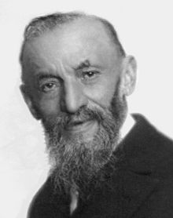

Topic 1 · Numbers & Proof Foundations
Numbers
From Pythagoras to Peano: induction, divisibility, modular arithmetic, and the proofs that hold Number Theory together.
§2.1Introduction
The study of numbers goes back to the very foundations of human rationality. In Ancient Greece, philosophers long debated the nature of things: for Thales water was the basis of all existence; for Heraclitus everything is movement, so his key element is fire. The Greeks were also good mathematicians, and one such mathematician was Pythagoras. He argued that, in actuality, all we can discern for sure is mathematics — \(2+2=4\) in all situations. With his belief in mind, we can conclude that mathematics is indeed the language of the universe. To understand it at its basic level, we first delve into the world of numbers.
§2.2Axiomatic definition and induction
The most popular axiomatic definition of numbers belongs to the Italian mathematician Giuseppe Peano (1858–1932), written down in his 1889 book The principles of arithmetic presented by a new method.
- \(0\) is a natural number (\(0\in\mathbb N\)).
- There exists a function \(v:\mathbb N\to\mathbb N\) such that \(v(m)=v(n)\) iff \(m=n\), for all \(m,n\in\mathbb N\).
- There is no element \(n\) of \(\mathbb N\) such that \(v(n)=0\).
- (Principle of induction) If a set \(A\subseteq\mathbb N\) contains \(0\) and has the property that for every \(n\in A\), \(v(n)\in A\), then \(A=\mathbb N\).

The successor map \(v\) becomes, after a few calculations, what generates addition. Working directly from the axioms is tiresome, so we assume them known. The important takeaway is the principle of induction: a method through which, based on past results, we obtain future results. Suppose we want to prove a statement \(P\) for all numbers — for instance, \(P(n)\): "\(2n\) is even".
- Define \(P(n)\).
- Prove \(P(0)\) (or, if impossible, the first \(P\) for which the question makes sense).
- (Inductive step) Assume \(P(k)\) holds. Prove, using \(P(k)\), that \(P(k+1)\) holds.
- Conclude by invoking the induction principle.
Example. We prove Question 6 from the Initial Aptitude Test rigorously. Let \(P(n)\) be: any \(n\) non-parallel lines, no three concurrent, produce \(n^2\) line segments. \(P(1)\) is trivial — one line is one segment. Assume \(P(k)\). Adding a new line generates \(k\) new segments on the pre-existing lines (one on each) and the new line itself carries \(k+1\) segments determined by the previous lines. We obtain \(2k+1\) new segments on top of the \(k^2\) we have, so \((k+1)^2\) segments: \(P(k+1)\) holds, and by induction \(P(n)\) holds for all \(n\).
Some questions require an even stronger version:
- Define \(P(n)\) and prove the base case.
- (Inductive step) Assume that \(P(i)\) holds for every \(i\le k\). Prove, based on all of these, that \(P(k+1)\) holds.
- Conclude by the strong induction principle.
The two methods are in fact equivalent; the difference is the information used in the inductive step. Always write down which induction you are using and what information your inductive step uses.
These terms appear often in TMUA Paper 2, and induction is the perfect place to understand them. In weak induction, "\(P(k)\) is true" is necessary to carry out the step to \(P(k+1)\) — and it is also sufficient. Knowing both \(P(k-1)\) and \(P(k)\) would be sufficient, but not necessary, since \(P(k-1)\) isn't needed. In strong induction, where the step uses all of \(P(1),\dots,P(k)\), the truth of \(P(k)\) is necessary but not sufficient. In short: a necessary statement must happen for a result to hold but may not give it outright; a sufficient statement gives the result, possibly containing more information than is needed. This idea is developed fully on the Logic and Proof page.
§2.3Properties of numbers. Modular arithmetic
In this section we deal with natural numbers \(\mathbb N=\{0,1,2,\dots\}\). The property we analyse is divisibility: \(a\) divides \(b\) iff \(b=k\cdot a\) for some \(k\in\mathbb N\). For two naturals \(a, b\): the greatest common divisor (gcd) is the largest number dividing both; the least common multiple (lcm) is the smallest number divisible by both. The bedrock of divisibility is composed of numbers with only two divisors, 1 and themselves: the prime numbers.
Let \(n\) be a natural number. Then \(n=p_1^{k_1}p_2^{k_2}\cdots p_m^{k_m}\), where the \(p_i\) are primes (the prime factors of \(n\)) and \(k_i\ge1\). Two numbers sharing no prime factors are called coprime.
If \(n=p_1^{k_1}\cdots p_m^{k_m}\), the sum of its divisors is \(\displaystyle S(n)=\prod_i\frac{p_i^{k_i+1}-1}{p_i-1}.\)
If \(n\) is divisible by two coprime numbers \(m\) and \(l\), then \(n\) is divisible by \(m\cdot l\).
Lack of divisibility is just as important. For naturals \(a,b\) we can write \(b=c\cdot a+r\) with \(0\le r<a\): division with remainder, which leads to modular arithmetic, the study of residues. We say \(a\equiv r\ (\mathrm{mod}\ n)\) iff \(a-r\) is a multiple of \(n\). For instance \(3\equiv1\ (\mathrm{mod}\ 2)\). Residues modulo 4, 5, 6, 8 are of particular importance:
A perfect square \(n^2\) satisfies either \(n^2\equiv0\ (\mathrm{mod}\ 4)\) or \(n^2\equiv1\ (\mathrm{mod}\ 4)\).
Modular arithmetic is a perfect introduction to a very useful method of proof: infinite descent, a form of proof by contradiction. We assume a property holds for a set of numbers, prove it must then hold for a set of smaller numbers, and so forth infinitely — impossible, since the natural numbers are bounded below.
- Define \(P(A)\), the assertion satisfied by a set of numbers \(A\).
- Prove, based on \(P(A)\), that \(P(A')\) is also true for a set \(A'\) of smaller numbers.
- Conclude that the descent would continue infinitely, contradicting the fact that the natural numbers are bounded below.
Two definitions before our famous example. The naturals extend to the integers \(\mathbb Z=\{\dots,-2,-1,0,1,2,\dots\}\), and then to the rationals \(\mathbb Q=\{\frac ab \mid a,b\in\mathbb Z,\ \gcd(a,b)=1\}\); a number that isn't rational is irrational. And we record the general shape of proof by contradiction:
- Define \(P(A)\), the assertion to prove.
- Assume the opposite of \(P(A)\) is true.
- Working through the problem, show this leads to something impossible.
- Since the opposite leads to a contradiction, \(P(A)\) is true.
Example. We prove that \(\sqrt2\) is irrational.
§2.4Problems
Let \(a\equiv c\ (\mathrm{mod}\ m)\) and \(b\equiv d\ (\mathrm{mod}\ m)\). Prove that \(a+b\equiv c+d\ (\mathrm{mod}\ m)\).
Find the smallest \(x\ge0\) such that \(7^2\equiv x\ (\mathrm{mod}\ 7)\).
Find the smallest \(x\ge0\) such that \(19^2\equiv x\ (\mathrm{mod}\ 13)\).
The product of six consecutive numbers is a 12-digit number of the form \(\overline{abb\,cdd\,cdd\,abb}\), where the digits \(a,b,c,d\) are also consecutive numbers in some order. What is the value of the digit \(d\)?
Find all triples \((m,n,p)\) such that \(p^n+3600=m^2\), where \(p\) is prime and \(m,n\) are natural numbers.
There are integers \(a_2,\dots,a_7\) such that \[\frac57=\frac{a_2}{2!}+\frac{a_3}{3!}+\frac{a_4}{4!}+\frac{a_5}{5!}+\frac{a_6}{6!}+\frac{a_7}{7!},\] where \(0\le a_i<i\) for \(i=2,\dots,7\). Find \(a_2+a_3+a_4+a_5+a_6+a_7\).
Does there exist an integer \(k\) such that \(\log_{10}(1+49367\cdot k)\) is also an integer?
Can we find positive integers \(a\) and \(b\) such that both \(a^2+b\) and \(b^2+a\) are perfect squares?
Find all integers \(p,q,r\) such that \(p^2+q^2=8r^2\). (Hint: consider \(p\) and \(q\) modulo 8.)
Prove that the smallest prime factor of \(p!+1\), where \(p\) is prime, is at least \(p+2\). Hence, prove that there is an infinite number of prime numbers.
Given \(p\) prime, calculate \(1^k+2^k+\dots+(p-1)^k\) modulo \(p\).
For how many positive integers \(n\) less than 200 is \(n^n\) a cube and \((n+1)^{n+1}\) a square?
(i) Write down a solution of the equation \(x^2-2y^2=1\) (*) for which \(x\) and \(y\) are non-negative integers. Show that, if \(x=p,\ y=q\) is a solution of (*), then so also is \(x=3p+4q,\ y=2p+3q\). Hence find two solutions of (*) for which \(x\) is a positive odd integer and \(y\) is a positive even integer.
(ii) Show that, if \(x\) is odd and \(y\) is even, (*) can be written in the form \(n^2=\frac12 m(m+1)\), where \(m\) and \(n\) are integers.
(i) Show that, if \((a,b)\) is any point on the curve \(x^2-2y^2=1\), then \((3a+4b,\,2a+3b)\) also lies on the curve.
(ii) Determine the smallest positive integers \(M\) and \(N\) such that, if \((a,b)\) is any point on \(Mx^2-Ny^2=1\), then \((5a+6b,\,4a+5b)\) also lies on the curve.
(iii) Given that \((a,b)\) lies on \(x^2-3y^2=1\), find positive integers \(P,Q,R,S\) such that \((Pa+Qb,\,Ra+Sb)\) also lies on the curve.
(i) Show that, if \(n\) is an integer such that \((n-3)^3+n^3=(n+3)^3\), then \(n\) is even and \(n^2\) is a factor of 54. Hence prove the equation has no solutions.
(ii) Show that, if \(n\) is an integer such that \((n-6)^3+n^3=(n+6)^3\), then \(n\) is even. Hence prove the equation has no solutions.
The \(n\)th Fermat number is \(F_n=2^{2^n}+1\), \(n=0,1,2,\dots\). Calculate \(F_0,F_1,F_2,F_3\). Show that, for \(k=1,2,3\), \[F_0F_1\cdots F_{k-1}=F_k-2.\quad(*)\] Prove, by induction or otherwise, that (*) holds for all \(k\ge1\). Deduce that no two Fermat numbers have a common factor greater than 1. Hence show that there are infinitely many prime numbers.
(i) Suppose \(x,y,z\) are whole numbers such that \(x^2-19y^2=z\). Show that for any such \(x,y,z\),
\[\left(x^2+Ny^2\right)^2-19(2xy)^2=z^2\]
where \(N\) is a particular whole number which you should determine.
(ii) Find \(z\) if \(x=13\) and \(y=3\). Hence find a pair of whole numbers \((x,y)\) with \(x^2-19y^2=4\) and \(x>2\).
(iii) Hence find a pair of positive whole numbers \((x,y)\) with \(x^2-19y^2=1\) and \(x>1\). Is your solution the only such pair? Justify your answer.
(iv) Prove that there are no whole-number solutions to \(x^2-25y^2=1\) with \(x>1\).
(v) Find a pair of positive whole numbers \((x,y)\) with \(x^2-17y^2=1\) and \(x>1\).
For each positive integer \(n\), \(\sigma(n)\) denotes the sum of its divisors; thus \(\sigma(1)=1\), \(\sigma(2)=3\), \(\sigma(3)=4\) and so on. The number \(n\) is said to be \(k\)-perfect if \(\sigma(n)=kn\).
(i) Find a 2-perfect number.
(ii) If \(p\) and \(q\) are distinct primes, show that \(\sigma(pq)=\sigma(p)\sigma(q)\).
(iii) If \(m\) and \(n\) are integers with no common divisor, show that \(\sigma(mn)=\sigma(m)\sigma(n)\).
(iv) Show that if \(n\) is 3-perfect and \(n\) is not divisible by 3, then \(3n\) is 4-perfect.
(i) Expand and simplify \((a-b)\left(a^n+a^{n-1}b+\dots+ab^{n-1}+b^n\right)\).
(ii) The prime 3 is one less than a square number. Are there any other primes with this property? Justify your answer.
(iii) Find all the primes that are one more than a cube number. Justify your answer.
(iv) Is \(3^{2015}-2^{2015}\) a prime number? Explain your reasoning carefully.
(v) Is there a positive integer \(k\) for which \(k^3+2k^2+2k+1\) is a cube number? Explain your reasoning carefully.
(i) Find a solution to the equation \(z^2-11y^2=1\).
(ii) Prove that for every solution \((z_0,y_0)\), the numbers \(\left(z_0^2+11y_0^2,\ 2z_0y_0\right)\) also form a solution. Hence prove that the equation has infinitely many solutions.
Let \(n\in\mathbb N^*\) and \(a,b,c\in\mathbb N\) such that \(a^n=b-c\), \(b^n=c-a\), \(c^n=a-b\). Prove that \(a=b=c=0\).
Find all prime numbers \(p\) such that \(p^3+p^2+11p+2\) is prime. (Hint: think about numbers modulo 6.)
(i) Prove that \(x^2+y^2+z^2-xy-yz-zx=0\) implies \((x-y)^2+(y-z)^2+(z-x)^2=0\). Hence deduce \(x=y=z\).
(ii) Let \(x,y,z,a\in\mathbb Z\). Prove that the equation \(x^2+y^2+z^2-xy-yz-zx=3\cdot5^a\) has no solutions.
Let \(p,q>0\) be integers and let \(d>0\) be the smallest integer which can be written in the form \(d=\alpha p+\beta q\) with \(\alpha,\beta\) integers.
(a) Let \(c\) be an integer such that both \(p\) and \(q\) are multiples of \(c\). Show that \(d\) is a multiple of \(c\).
(b) Show that \(d\le p\).
(c) Show that integers \(\lambda\) and \(r\) can be found such that \(p=\lambda d+r\), with \(\lambda\ge0\) and \(0\le r\le d-1\).
(d) Show that \(r\) can be written as \(r=\alpha'p+\beta'q\) for suitable integers \(\alpha',\beta'\).
(e) Deduce that \(r=0\) and that \(p\) is a multiple of \(d\).
(f) Show that if \(p\) and \(q\) are primes with \(p\ne q\) then \(d=1\).
Consider the non-zero natural numbers \((m,n)\) such that \(\dfrac{n^2+2m}{n^2-2m}\) and \(\dfrac{m^2+2n}{m^2-2n}\) are integers.
(a) Prove that \(|m-n|\le2\). (b) Find all pairs \((m,n)\) with the given property.
Prove that there is no solution to \(x^2+y^2=3\) in rational numbers.